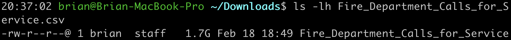
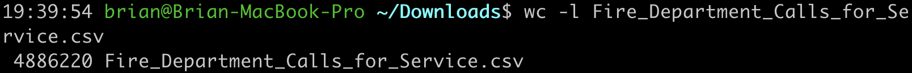
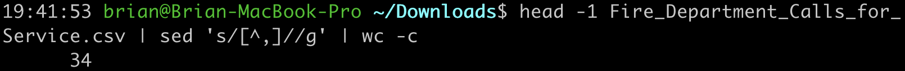

We would like to present some stories regarding fire safety in San Francisco.
Data source: Fire Department Calls for Service, San Francisco (Our dataset was downloaded on 02/18/2019)
| Attribution | Value | Sreenshot |
|---|---|---|
| Size | 1.7 GB |  |
| Rows | 4886220 |  |
| Columns | 34 |  |
| Data Types | String, Number, Date, Datetime, Boolean, Location (Latitude and Longitude) | |
| Done? | Letter | Justification |
|---|---|---|
| D | If appropriate, provide a brief justification for this level of functionality. Clearly state if this level was not implemented. | |
| C | If appropriate, provide a brief justification for this level of functionality. Clearly state if this level was not implemented. | |
| B | If appropriate, provide a brief justification for this level of functionality. Clearly state if this level was not implemented. | |
| A | If appropriate, provide a brief justification for this level of functionality. Clearly state if this level was not implemented. |
Any additional context you want to provide regarding functionality and grading can be included here. This may include any challenges or bugs you ran into that prevented you from implementing additional functionality.